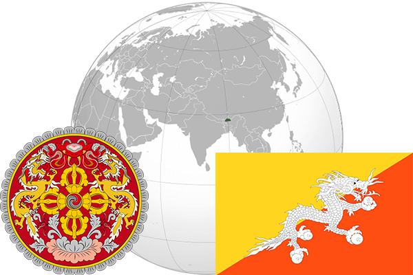

To`liq nomi: Butan Qirolligi
Region: Markaziy osiyo
Qonunchilik shakli: Konstitutsion monarxiya
Mustaqillik kuni: 17-dekabr 1907 - yil
Poytaxti: Tximpxu
Maydoni: 38394 km² (dunyoda 135 -o`rinda )
Chegaradosh davlatlari: Xitoy, Hindiston
Aholisi: 750 125 (dunyoda 161 -o`rinda ) 2016 -yil roʻyxat
Aholi zichligi: 18 /km²
Aholining o`rtacha yoshi: 55,2 yil ( 55,0 ayollar, 55,4 erkaklar)
Rasmiy tili: dzong-xe
Dini: Buddizm
Pul birligi: Ngultrum
Telefon prefiksi: +975
Internet domen: .bt
Xalqaro tashkilotlarga a`zoligi: BMT (1971 –yildan)
Dengiz va okeanlarga chiqishi: yo`q
YIM: Butun: $ 4,646 mlrd, Jon boshiga: $ 6112 (2012 - yil roʻyxati)
Yirik shaharlari: Tximpxu